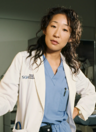

Meredith Grey
Who is Meredith Grey?
Meredith Grey M.D., F.A.C.S., (born 1977 or 1978) is a fictional and titular character from the medical drama television series Grey's Anatomy, which airs on the American Broadcasting Company (ABC) in the United States. The character was created by series producer Shonda Rhimes and is portrayed by actress Ellen Pompeo. Meredith made her first appearance in the pilot episode, "A Hard Day's Night", broadcast on March 27, 2005. She also appears in the spin-off series Station 19 as a recurring character.
Meredith is the series' protagonist and was introduced as a surgical intern at the fictional Seattle Grace Hospital (later Seattle Grace-Mercy West Hospital, and afterward Grey+Sloan Memorial). She eventually obtains the position of a surgical resident, and later, the position of an attending surgeon. In 2016, she attains the Chief of General Surgery position. As the daughter of world-renowned surgeon Ellis Grey (Kate Burton), Meredith struggles with balancing the challenges of being in a competitive profession, maintaining her relationship with her one-night stand and eventual husband, Derek Shepherd (Patrick Dempsey), her role as a mother, and her friendships with her colleagues. Her relationships with colleagues Cristina Yang (Sandra Oh), Izzie Stevens (Katherine Heigl), Alex Karev (Justin Chambers) and George O'Malley (T. R. Knight) form a central part of the show's early dynamics.
Meredith serves as the narrator of the show and is the focal point of most episodes, though other characters' perspectives are also explored. Pompeo's on-screen chemistry with Dempsey has been celebrated as a high point of the series. Rhimes has described Meredith as someone who doesn't believe in absolute good or bad, but rather does what she feels is right. Meredith Grey has been positively received by critics, with Alessandra Stanley of The New York Times calling her "the heroine of Grey's Anatomy."
Ellen Pompeo appeared in approximately 407 episodes of Grey's Anatomy as Meredith Grey, spanning seasons 1-19. While she is no longer a series regular, she continues to voiceover at the beginning and end of each episode. She also directed two episodes of Grey's Anatomy. In addition to her work on Grey's Anatomy, she also appeared in three episodes of Station 19. She stepped back in 2022 in order to prioritze her family and other projects, yet still appears on the show periodically.
Derek Shepherd

Who is Derek Shepherd?
Derek Christopher Shepherd, often referred to as "McDreamy" for his "attractiveness", is a fictional surgeon from the ABC medical drama Grey's Anatomy, portrayed by actor Patrick Dempsey. He made his first appearance in the series' pilot episode, "A Hard Day's Night", which was broadcast on March 27, 2005.
Derek was married to Addison Montgomery (Kate Walsh), but their relationship ended in divorce in 2007. Before his death in 2015, Derek was happily married to his longtime partner, Meredith Grey (Ellen Pompeo), with whom he had three children.
Derek served as the Chief of Surgery at Seattle Grace Mercy West Hospital (previously Seattle Grace Hospital, and later Grey Sloan Memorial Hospital). However, he abruptly resigned from the position in Season 7, following the traumatic hospital shooting.
For his portrayal of Derek Shepherd, Dempsey earned widespread recognition. He was nominated for the Golden Globe Award for Best Actor – Television Series Drama in both 2006 and 2007. Additionally, he also received a nomination for the Screen Actors Guild Award for Outstanding Performance by a Male Actor in a Drama Series.
Patrick Dempsey was in over 200 episodes of Grey's Anatomy. He played Dr. Derek Shepherd, also known as "McDreamy," and was a series regular for 11 seasons. His character was written out of the show in season 11, the storyline for Derek's departure involved a job offer in Washington D.C. and a car accident on the way to it, leading to his tragic death.
Miranda Bailey
Who is Miranda Bailey?
Miranda Bailey, M.D., F.A.C.S. is a fictional character from the long-running medical drama Grey's Anatomy, created by Shonda Rhimes and portrayed by Chandra Wilson since the series' debut in 2005. Bailey has appeared in 444 episodes across Grey's Anatomy, making her the most frequently appearing character in the Grey's Anatomy universe.
Originally introduced as a resident in general surgery at Seattle Grace Hospital, Bailey rises through the ranks to become an attending physician and is eventually appointed Chief of Surgery. Her relationship with the series' five original surgical interns—Meredith Grey (Ellen Pompeo), Cristina Yang (Sandra Oh), Izzie Stevens (Katherine Heigl), Alex Karev (Justin Chambers) and George O'Malley (T. R. Knight)—is a central focus in the early seasons, highlighting her role as a tough but caring mentor.
Miranda Bailey has appeared in 444 episodes across the Grey's Anatomy series, including spin-off shows Station 19 and Private Practice. This makes her the most frequently appearing character in the Grey's Anatomy universe, still a series regular in the newest season, season 22.
Christina Yang
Who is Christina Yang?
Cristina Yang, M.D., Ph.D., F.A.C.S. is a fictional character from the medical drama television series Grey's Anatomy, which has aired for 20 seasons on the American Broadcasting Company (ABC) in the United States. The character was created by series producer Shonda Rhimes and is portrayed by actress Sandra Oh. Cristina was introduced as a surgical intern at the fictional Seattle Grace Hospital, and over the course of the series, she rose to become a cardiothoracic surgical fellow. Her relationships with fellow doctors Meredith Grey (Ellen Pompeo), Izzie Stevens (Katherine Heigl), Alex Karev (Justin Chambers) and George O'Malley (T. R. Knight) were central to the show's early seasons.
Cristina became engaged to Preston Burke (Isaiah Washington), a cardiothoracic surgeon, but the relationship ended on the day of their wedding. Cristina also had a past romantic relationship with renowned surgeon and mentor Colin Marlowe (Roger Rees), and later married but eventually divorced trauma surgeon Owen Hunt (Kevin McKidd).
Oh originally auditioned for the role of Miranda Bailey, but the part ultimately went to Chandra Wilson. Oh's portrayal of Cristina Yang earned her widespread critical acclaim, with Mark Perigard of the Boston Herald highlighting Cristina's friendship with Meredith as "the secret-core of Grey's Anatomy". Oh's performance garnered her numerous awards, including a Golden Globe and a Screen Actors Guild Award in 2006. She also received five consecutive nominations for the Primetime Emmy Award for Outstanding Supporting Actress in a Drama Series from 2005 to 2009. Yang has been seen as a landmark for Asian representation in Hollywood due to the character breaking away from the usual Asian stereotypes and offering a more complex and nuanced portrayal.
Cristina was characterized by ABC as competitive, ambitious, and highly intelligent, with her main flaw being her aggressive and tactless attitude. In May 2012, E! Online reported that Oh had signed on for two more years, alongside her fellow cast members. However, she ultimately left the show after Season 10, with her character being written out of the main storyline. Cristina's departure marked a significant moment in Grey's Anatomy, as she had been one of the central characters from the inception of the series. Her exit, though bittersweet, was written in a way that honored her character's ambition and professional dedication, leaving her to continue her career in Zurich, Switzerland as the head of a prestigious cardiothoracic department.
Cristina Yang appeared in 221 episodes of Grey's Anatomy. Even after leaving following Season 10, she was referenced multiple times and appeared to be doing well.